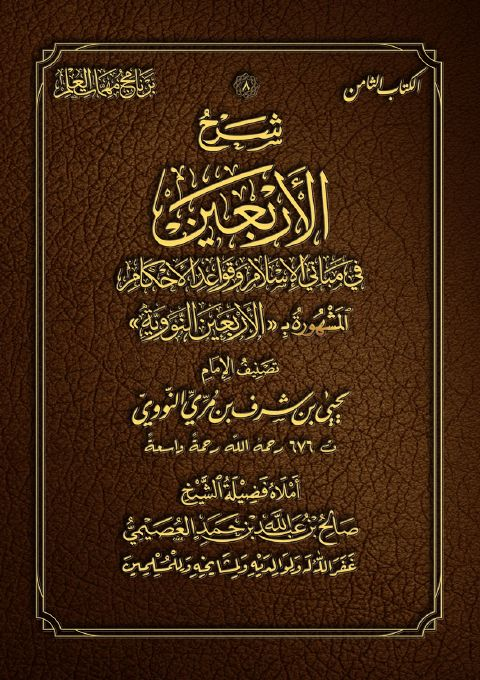

Downloads need an internet connection.
شرح الأربعين في مباني الإسلام وقواعد الأحكام المشهورة بالأربعين النووية- ملون
Authors: يحيى بن شرف النووي صالح بن عبد الله العصيمي
**▫️ العنوان: شرح الأربعين في مباني الإسلام وقواعد الأحكام المشهورة بالأربعين النووية- ملون** ▪️ المؤلف: #يحيى_بن_شرف_النووي • #صالح_بن_عبد_الله_العصيمي ▫️ الطبعة: 1 ▪️ عدد الأجزاء: 1 ▫️ الصفحات: 143 ▪️ نوع الوعاء: #كتاب ▫️ التصنيف الرئيسي: #الحديث_وعلومه ۪